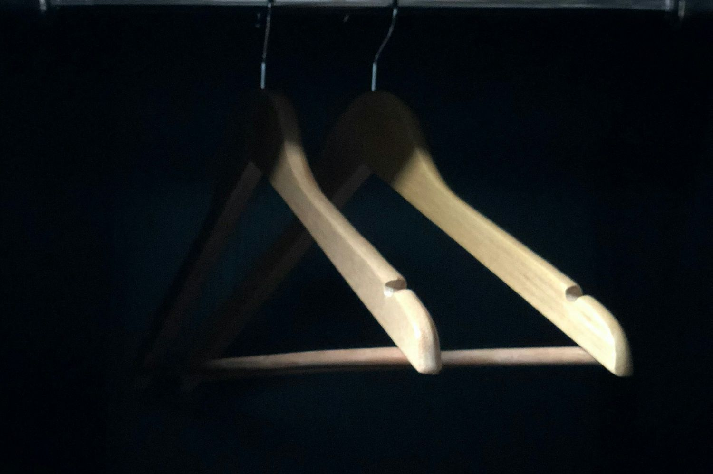
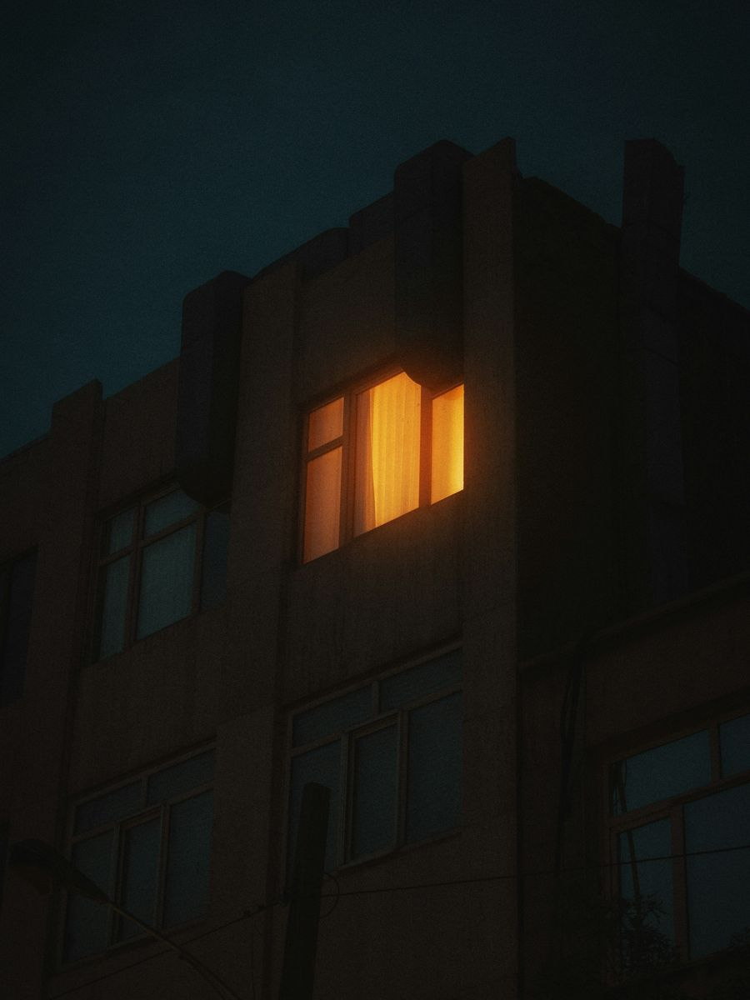
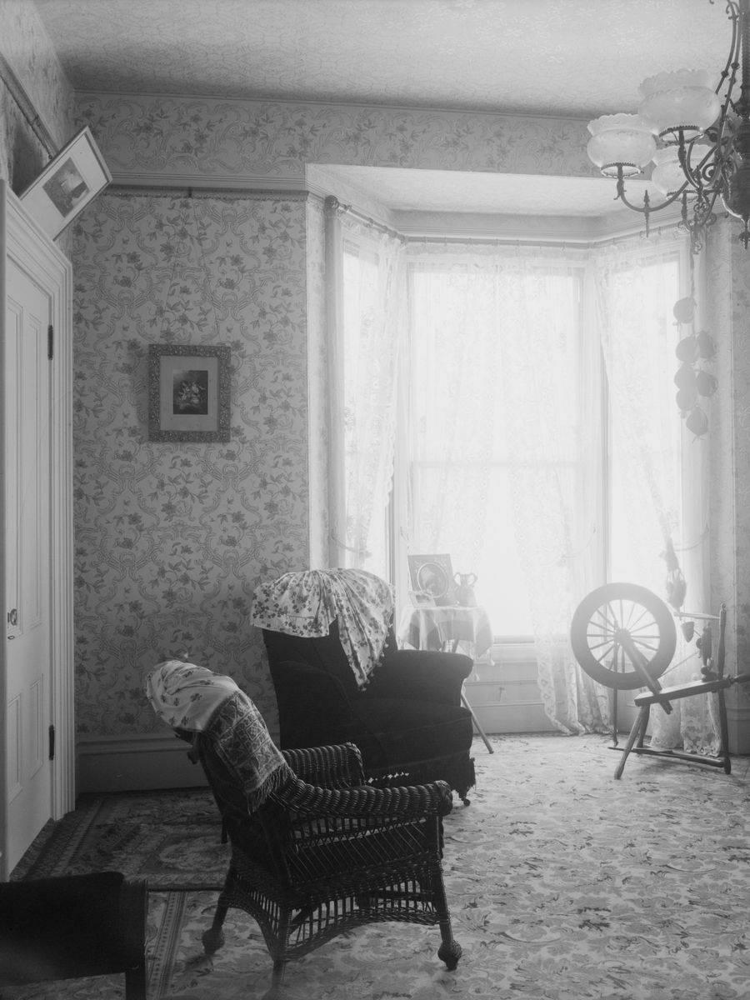
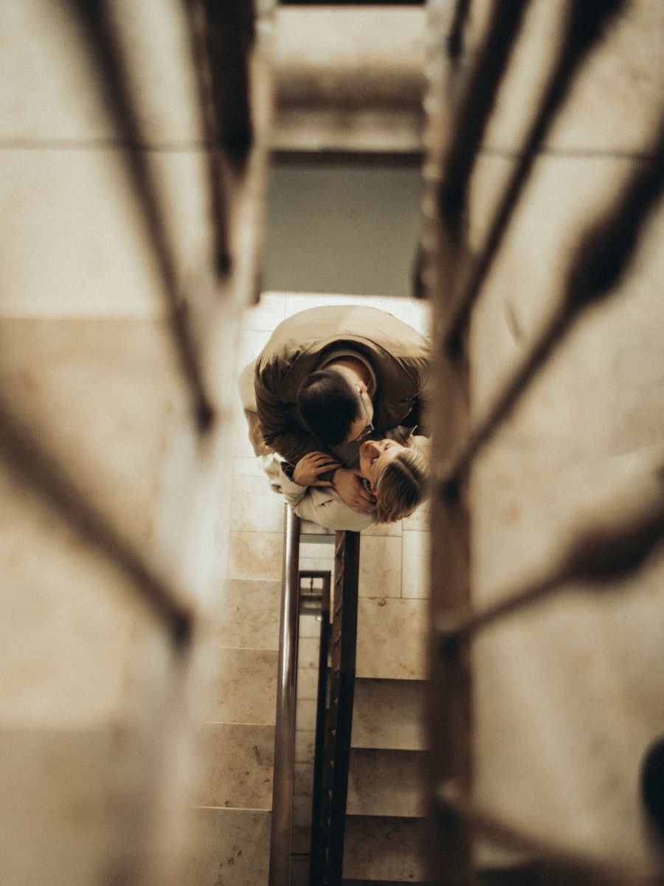

Before private information becomes leverage.
Private conversations, finances and plans can become leverage over you. Toza assesses and hardens your phone, computer and accounts with you, in person.
In person · With you present · You control your credentials
Where this usually begins.

Separation or divorceWhat still connects your digital lives.

Business or founder disputeWhere personal and business access still meet.

Inheritance conflictFamily arrangements that outlived the trust.

Someone knows somethingPrivate information has surfaced. Start with what can be checked.
Or before anything happens. You don't need a known incident to begin.